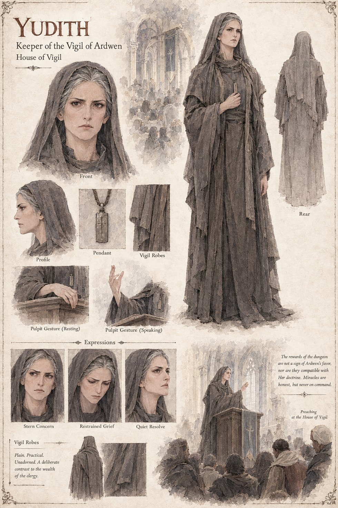

Yudith
Keeper of the Vigil of Ardwen · House of Vigil
Keeper of the Vigil of Ardwen, who has spent eleven years teaching that Ardwen answers the honest but never on command — a doctrine a dungeon that opens the same chest, the same way, every single time, makes steadily harder to preach. She raises the objection formally and is proven right eventually, a generation after her death, by which point the Houses nearest the entrance have long since reorganized themselves around blessing delvers rather than warning them.
“The rewards of the dungeon are not a sign of Ardwen's favor, nor are they compatible with Her doctrine. Miracles are honest, but never on command.”
Appears in The Stolen Prince War